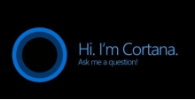

Trend Teknologi Saat Ini
- Windows 11
- Steam deck
- A.I (Artificial Intellegence)
Windows 11 adalah penerus sistem operasi dari microsoft yaitu windows 10. Terdapat cukup banyak perbedaan antara windows 11 deengan windows versi sebelumnya, windows 10. Dimulai dari perbedaan fitur, sampai perbedaan yang paling terlihat, yaitu UI (user Interface).

Lalu perbedaan selanjutnya yaitu perbedaan logo. dibandingkan dengan logo windows 10 yang berbentuk jendela yang menghadap serong, logo di windows 11 ini lebih simpel, hanya sebuah jendela yang menghadap kedepan.
Windows 11 saat ini dapat menjalankan aplikasi android. Jadi, anda tidak perlu menginstall emulator untuk menjalankan aplikasi android. Aplikasi-aplikasi android ini bisa didownload di microsoft store dan diunduh melalui amazon store. Teknologi yang digunakan microsoft agar mampu menjalankan aplikasi android adalah teknologi intel bridge.
Untuk para gamer, windows 11 hadir dengan fitur auto HDR. Fitur ini akan menghadirkan kontras dan warna yang lebih baik saat menjalankan game. Lalu bagaimana cara untuk upgrade ke windows 11? Jika komputer atau laptop ada saat ini menjalankan Windows 10 dan spesifikasi komputer atau laptop anda sesuai dengan ketentuan minimum windows 11, maka anda dapat upgrade ke windows 11 secara gratis. Untuk selengkapnya, anda bisa cek disini

Steam deck adalah handheld gaming pc yang dikembangkan oleh Valve. Seperti nintendo switch, Steam deck juga bisa disambungkan ke monitor atau televisi melalui dock atau kabel yang dijual terpisah. Perbedaannya dengan nintendo switch adalah Steam Deck ini memiliki spesifikasi yang lebih tinggi, dan powerful.
Seperti PC pada umumnya, Steam Deck juga bisa diinstall software atau disambungkan ke hardware seperti keyboard atau mouse. Steam Deck juga bisa diinstall windows.
Steam Deck ini menjalankan sistem operasi berbasis linux, yaitu SteamOS 3.0 dan Valve menjelaskan bahwa game yang ada saat ini bisa langsung dijalankan tanpa ada kendala sama sekali. Steam Deck memiliki fitur Steam chat, Cloud, dan lain-lain. Untuk selengkapnya, bisa anda cek disini
Artificial Intelligence adalah teknologi kecerdasan buatan yang dijalankan oleh mesin, terutama sistem komputer. Teknologi ini sangat berguna untuk memudahkan pekerjaan manusia. Adapun contoh AI, yaitu google assistant, alexa, cortana, siri, dan lain-lain.
 |
 |
 |
 |